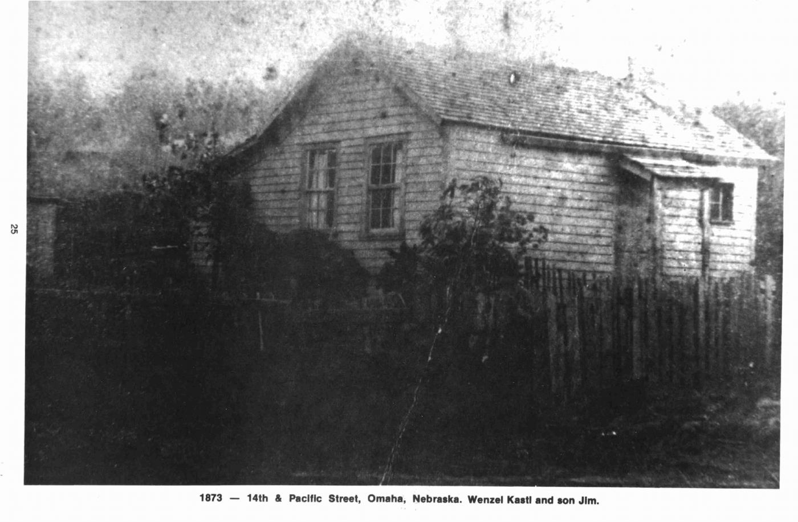

The book · The Family of Peter Kastl
Page 25 1873 — 14th & Pacific Street, Omaha, Nebraska. Wenzel Kastl and son Jim.


Transcription

Transcriber’s notes
Full-page photograph printed sideways (landscape); the scan is shown rotated so the page number '25' runs vertically along the left edge. No body text. Top of photo reaches the top edge of the scan. The caption names Wenzel Kastl and son Jim but no figures are discernible in the reproduction.